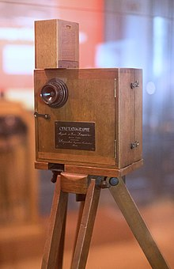

Фільм, також кінофі́льм, кіно, кінострічка — аудіовізуальний твір кінематографії, що складається з епізодів, поєднаних між собою творчим задумом і зображувальними засобами, та який є результатом спільної діяльності його авторів, виконавців і виробників.У технологічному плані фільм являє собою сукупність рухомих зображень (монтажних кадрів), пов'язаних єдиним сюжетом. Кожен монтажний кадр складається з послідовності фотографічних або цифрових нерухомих зображень, на яких зафіксовані окремі фази руху. Фільм, як правило, містить у собі звуковий супровід.
Область людської діяльності, пов'язана зі створенням і відтворенням кінофільмів, називається кінематографом.
Перегляд фільмів є частиною сучасної культури. Герої популярних фільмів і актори часто стають знаменитими. Спеціально для масового перегляду фільмів будують кінотеатри. Зазвичай тривалість фільму становить 90-120 хвилин (1,5-2 години).
 Перший крок до кінематографа був зроблений у 1685 році, коли був винайдений «чарівний ліхтар» — камера-обскура. Другий крок до кінематографа зробив у 1791 році Фарадей і його друг Макс Роджер. Уся Європа намагалася винайти апарат, щоб оживити малюнок. Прилад Фарадея називався фенакістископ. До апарату додавався ряд послідовних зображень. Вчений Жозеф Плато займався розподілом руху на фази (наприклад, рух людини). Коли Фарадей одержав у руки ці праці, йому до завершення фенакістископа залишалося зовсім небагато. Третій крок відбувся у 1839 році. Він став можливий завдяки роботам Луї Дагера та Жозефа Ньєпса. Губернатор Каліфорнії Ліленд Стенфорд і фотограф Едвард Майбрідж провели один цікавий експеримент. Леонард дуже любив коней і посперечався з Майбріджем, чи «відриває кінь під час галопу ноги від землі чи ні». Вони придбали 60 фотокамер і розставили їх обабіч бігової доріжки (по 30 фотокамер). Навпроти них були встановлені будочки, в яких розташувалися люди, що контролювали камери. Між фотокамерою і будкою був натягнутий шнурок. Коли кінь переходив на галоп і опинявся на відрізку, де були встановлені камери, він зачіпав ногою нитку, після чого відбувалося спрацьовування камери і виходило зображення однієї з фаз руху коня. Це була перша спроба розкласти рух на фази
Народження кінематографу у вигляді, близькому до того, який ми можемо спостерігати зараз, починається в 19 столітті. Хоча фотографія, як спосіб фіксації нерухомих зображень, з'явилася ще в першій половині 19 ст., для того, щоб став можливим процес зйомки і відтворення руху, було потрібно, щоб фотографування могло відбуватися з короткими витримками. Але і після появи відповідних типів фотоемульсій в 70-х роках 19 ст. кіно з'явилося не відразу. Те, що нам сьогодні здається очевидним, винахідники і піонери кінематографа зрозуміли далеко не одразу. Були зроблені десятки спроб створити системи запису і відтворення рухомих зображень, в яких навіть брав участь знаменитий Едісон, але і його система виявилася незручною, розрахованою всього лише на індивідуальний перегляд, що не дозволило Едісону домогтися успіху. У результаті визнаними винахідниками кінематографа стали французи брати Луї та Огюст Люм'єри. Апаратура Люм'єрів виявилася дуже зручною. З її допомогою можна було легко знімати і демонструвати фільми на великому екрані, що і зумовило успіх їх винаходу.
Класифікація фільмів за ступенем документальності (достовірності) відеоматеріалу:
Класифікація фільмів за тривалістю екранного часу:
Класифікація фільмів за основними жанрами драматургії: